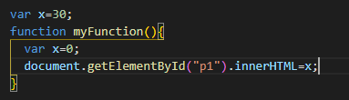
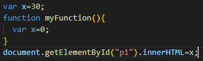
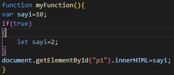
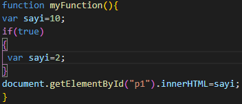
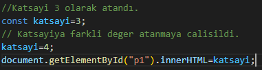
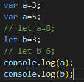

Javascript Scope Kavramı
Scope(Kapsam) nedir ?
Block Scope ve Function Scope.
Scope türleri nelerdir?
Global Scope ve Local Scope olmak üzere iki türü vardır. Local scope ise kendi içinde ikiye ayrılır;
Block Scope ve Function Scope.
Global Scope : Fonksiyonların ya da for, if veya while bloklarının dışında tanımlanan değişkenlere sahip olan scope türüdür.
Local Scope : Global Scope içerisinde belirtilen yapılarda tanımlanmış ve sadece tanımlandığı alan içerisinden ulaşılabilen değişkenlerin sahip olduğu scope türüdür.
Örnek üzerinden gidecek olursak ;

Burada değişken olarak Global Scope içerisinde x değişkenini 30 olarak aldık. Ancak Function Scope içerisinde x değişkeni 0 olarak atanmıştır. Function, if, for, while gibi bloklarda Local Scope olarak aldığı için p1 içerisine x değeri 0 olarak girilecektir.

Burada ise Global Scope içerisinde x değişkeni 30 olarak verilmiştir. Function Local Scope içerisinde ise x değişkeni 0 olarak atanmıştır. Ancak burada p1 içerisine x değeri 30 olarak atanacaktır çünkü x=0 ataması sadece Function Local Scope’u içerisinde gerçekleşir.

Block Scope içerisinde daha önce tanımlanmamış bir değişkene değer ataması yapabiliriz. Bu durumda bu değer Global Scope içerisinde olarak algılanır. Yukarıda görüldüğü gibi Function Scope içerisinde x=0 olarak atama yapılmıştır ancak Function Scope dışında bu değer kullanılmıştır.

ES6 ile birlikte gelen let veya const ile tanımlanan değişkenler Function Scope yerine Block Scope içerisinde yer alırlar. Ayrıca değişkenin aynı isimle yeniden tanımlanmasında var değişkeni ile izin verilirken diğerlerinde buna izin verilmez. Sabit değerler için const kullanılır ve bununla tanımlanan değerlerin değiştirilmesi istenmez. Yukarıdaki örnekte p1 içerisine sonuç olarak 10 yazacaktır.

Yukarıdaki örnekte ise var değişkeni ile yeniden tanımlanmıştır ve p1 içerisine sonuç olarak 2 değeri verilir.

Yukarıda const ile sabit bir katsayı atadık. Daha sonra bu katsayıyı 4 ile değiştirmek istediğimizde TypeError hatası alırız.

Yukarıdaki örnekte ise var ile değişkenimizin değerini birden fazla kez değiştirebiliriz ancak let a=8 izin verilmeyecektir çünkü let ile birden fazla tanımlamaya izin verilmemektedir. Burada eğer yorum satırlarından herhangi biri aktif edilirse Syntax Error alırız.